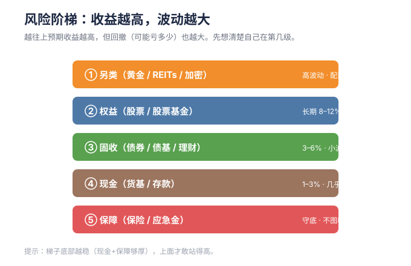

Asset allocation is the overwhelmingly dominant contributor to total return.
💡 本章为什么重要：本章进入实战：配多少股票、多少债券、定投多少钱，这些决策决定了你绝大部分长期收益。
M05 · 资产配置与定投
学习目标：学会把股/债/现金拼成适合你的组合，并用定投 + 再平衡把"择时焦虑"变成纪律。 预计用时：45 分钟 + 跑一次工具。
一、资产配置：决定你 90% 的结果
研究界有个著名结论（Brinson 等）：组合长期收益的差异，主要来源于资产配置，而非择股择时。
核心逻辑： - 股票长期收益高但波动大 - 债券波动小但收益低 - 两者不完全同涨同跌，组合在一起，能在"差不多收益"下"明显更小的波动"
仓库
tools/asset_allocation.py会根据你的风险偏好，给出股/债/现金的目标配比。

二、经典"年龄法则"（入门版）
一个古老但好用的经验公式：
权益占比(%) ≈ 100 − 你的年龄
- 25 岁 → 权益 75%、固收 25%
- 40 岁 → 权益 60%、固收 40%
进阶版用「100 − 年龄」改成「110 − 年龄」或按风险问卷调。本质是：越年轻、越能扛波动，权益越多。
三、定投：普通人对抗"猜底"的武器
定投 = 固定时间、固定金额买入（如每月 1 号买 1000 元指数基金）。
为什么有用
- 摊平成本：跌时同样的钱买更多份额，涨时买更少，自动"低买多、高买少"
- 消灭择时焦虑：不用纠结"现在是不是底"
- 强制储蓄：把理财变成习惯
定投的误区
- ❌ 定投不是"闭眼赚钱"，长期仍需底层资产向上
- ❌ 熊市停扣 = 放弃低价筹码，最可惜
- ✅ 止盈要有规则：如"估值进入历史高位分位"或"达到目标收益"再减
四、再平衡：机械地"卖高买低"
组合建好后，市场会让比例漂移。比如目标股 60%/债 40%，一年后股涨到 75%。
再平衡 = 每年（或偏离超 5%）把比例调回目标： - 卖一部分涨多的股票，买一部分跌多的债券 - 这逼你高位减仓、低位加仓，是反人性的好纪律
再平衡是少数"免费午餐"：不预测市场，却系统性提升风险收益比。
五、一个极简组合示例（教学用）
| 资产 | 占比 | 标的举例 |
|---|---|---|
| 国内宽基 | 35% | 沪深300 / 中证A500 指数基金 |
| 海外宽基 | 25% | 纳指100 / 标普500 QDII |
| 债券 | 30% | 纯债基金 / 国债 |
| 现金 | 10% | 货基（应急+加仓弹药） |
这只是框架演示，不是建议。你的比例由期限 + 风险承受决定。用
tools/asset_allocation.py生成你的版本。
六、本周行动清单 ✅
- [ ] 跑一次
tools/asset_allocation.py，得到你的目标配比 - [ ] 把现有持仓映射到"股/债/现金"，看偏离多少
- [ ] 设定定投日（如每月发工资后一天）和再平衡频率（每年）
七、下一步
→ M06 估值指标与择时：PE/PB/百分位怎么看，怎样判断"贵不贵"。
🌐 English Abstract
Topic: Asset allocation & dollar-cost averaging (DCA) — turning timing anxiety into discipline.
Key takeaways: - Asset allocation drives ~90% of long-term portfolio outcome (Brinson et al.) — more than stock-picking or timing. - Age rule of thumb: equity % ≈ 100 − your age (younger → more equity). - DCA removes timing anxiety, enforces saving, and auto "buys more when cheap". - Rebalancing mechanically sells high / buys low — one of the few genuine "free lunches" in finance.
Why it matters: This is where theory becomes a repeatable process you can actually stick to for decades.